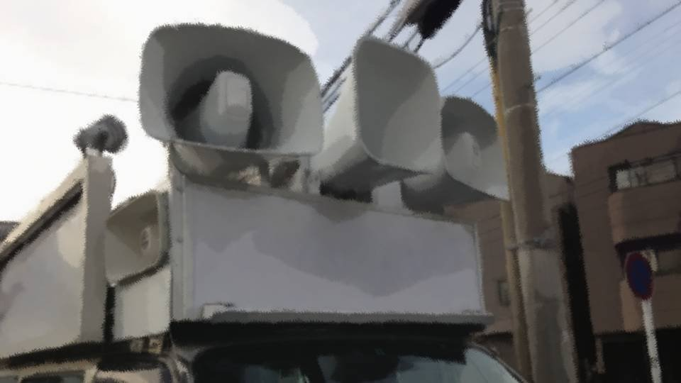

Script 00002090

町民の皆様、本日はお暑い中、足をお止めいただきありがとうございます。
来月行われる町長選挙に立候補しております中嶋長司と申します。
来月行われる町長選挙に立候補しております中嶋長司と申します。
私はすでに、5任期、20年町長を務めさせていただいております。
私はこれまで、元木町をいかにして成長させるか、 いかにして町民の皆様が豊かになれるか、 それに注力してまいりました。
その結果、人口は20年前と比較して、約8倍に増え、高齢率も約13%、日本一低い水準を達成いたしました。
私はこれまで、元木町をいかにして成長させるか、 いかにして町民の皆様が豊かになれるか、 それに注力してまいりました。
その結果、人口は20年前と比較して、約8倍に増え、高齢率も約13%、日本一低い水準を達成いたしました。
元木町には、他の市町村ならびに都道府県より優秀な人材が集まり、経済成長、福祉充実、地域活性化等、あらゆる面で急成長を遂げている自治体です。
しかしながら、私はそれに甘んじず、この元木町を日本一住みやすい地域にすることを夢見、目標とし、そして実現していくことを次の任期で達成したいと考えております。
しかしながら、私はそれに甘んじず、この元木町を日本一住みやすい地域にすることを夢見、目標とし、そして実現していくことを次の任期で達成したいと考えております。
しかし、思い返せば2か月前、この元木町で痛ましい事件が発生しました。
それは日本中でセンセーショナルに報道されるほどに衝撃的な事件で、この元木町の安心・安全神話が見事に崩壊した瞬間です。
元木町はそれまで、全国でも犯罪発生率の低い自治体でありました。
それに甘んじて、セキュリティ―― つまり『安全な生活』への取り組みが甘かったこと、私が最も反省すべきことです。
それは日本中でセンセーショナルに報道されるほどに衝撃的な事件で、この元木町の安心・安全神話が見事に崩壊した瞬間です。
元木町はそれまで、全国でも犯罪発生率の低い自治体でありました。
それに甘んじて、セキュリティ―― つまり『安全な生活』への取り組みが甘かったこと、私が最も反省すべきことです。
人口が増えれば、どうしても犯罪件数が増えてしまう。
大きな事件が起きれば、どうしても住民の皆さんに不安が残ってしまう。
この問題を放置していては、日本一の町にすることなど、とうていかないません。
私はここで、3つの公約を掲げます。
大きな事件が起きれば、どうしても住民の皆さんに不安が残ってしまう。
この問題を放置していては、日本一の町にすることなど、とうていかないません。
私はここで、3つの公約を掲げます。
1つ――この元木町をより発展させ、日本一所得の多い自治体にします。
この元木町に本社を置く企業に対して補助金を交付し、さらなる地域活性化を実現することで、皆さんの所得をさらに改善致します。
またこれにより、大手企業がグループ企業本社を元木町に本社を置く、という政策を促すことができ、日本の経済の一部をここに集めることが可能です。
この元木町に本社を置く企業に対して補助金を交付し、さらなる地域活性化を実現することで、皆さんの所得をさらに改善致します。
またこれにより、大手企業がグループ企業本社を元木町に本社を置く、という政策を促すことができ、日本の経済の一部をここに集めることが可能です。
2つ――この元木町の観光政策をさらに充実させます。
ご存じの通り、この元木町には素晴らしい桜に恵まれています。
近年のこの経済効果は凄まじいもので、もはや元木町になくてはならない重要な資源です。
元木町の桜をブランディングするとともに、この盆地の地形を生かし、夏、秋、冬も多くの観光客に親しまれる街づくりを目指します。
ご存じの通り、この元木町には素晴らしい桜に恵まれています。
近年のこの経済効果は凄まじいもので、もはや元木町になくてはならない重要な資源です。
元木町の桜をブランディングするとともに、この盆地の地形を生かし、夏、秋、冬も多くの観光客に親しまれる街づくりを目指します。
1つ目の公約に掲げました補助金の財源は、この観光収入より調達し、元木町のさらなる発展に役立てます。
3つ――この元木町を安心・安全な町にします。
先ほど申しました通り、この元木町の安全神話は崩壊しました。
また人口増加、観光充実化により、安全な生活が奪われるのではないかと危惧する町民の方もおられましょう。
私の任期中に、町内に1000台の監視カメラを設置し、事件の迅速な解決と、犯罪抑止を徹底します。
先ほど申しました通り、この元木町の安全神話は崩壊しました。
また人口増加、観光充実化により、安全な生活が奪われるのではないかと危惧する町民の方もおられましょう。
私の任期中に、町内に1000台の監視カメラを設置し、事件の迅速な解決と、犯罪抑止を徹底します。
また、荒れた場所では犯罪が起こりやすい心理――
いわゆるブロークンウィンドウ理論を起こさないよう、町のほころびを修繕する委員会を立ち上げます。
ですから、私が町長に再選した暁には、もう凶悪犯罪に怯える心配はありません。
佐波県警と連携して、この元木町を前よりもさらに安全な町にしてみせます。
ですから、私が町長に再選した暁には、もう凶悪犯罪に怯える心配はありません。
佐波県警と連携して、この元木町を前よりもさらに安全な町にしてみせます。
私はこれまで、さまざまな公約をして参りました。
そのすべてを実現し、この元木町の発展に貢献してきたという自負がございます。
ですから、先ほどの3つの公約―― これらも次の任期、4年以内に達成されます。
皆さんの所得向上、観光充実化、そして安心・安全な生活。
私を町長に再選していただければ、確実にこれらが4年以内に手に入ります。
そのすべてを実現し、この元木町の発展に貢献してきたという自負がございます。
ですから、先ほどの3つの公約―― これらも次の任期、4年以内に達成されます。
皆さんの所得向上、観光充実化、そして安心・安全な生活。
私を町長に再選していただければ、確実にこれらが4年以内に手に入ります。
どうか元木町民の皆さん。
私にあと4年のチャンスを与えてください。
私も、皆さんも、そして元木町も、中央公園の御神木のように大きく成長を遂げるチャンスです。
暑い中耳を傾けていただき、ありがとうございました。
私にあと4年のチャンスを与えてください。
私も、皆さんも、そして元木町も、中央公園の御神木のように大きく成長を遂げるチャンスです。
暑い中耳を傾けていただき、ありがとうございました。